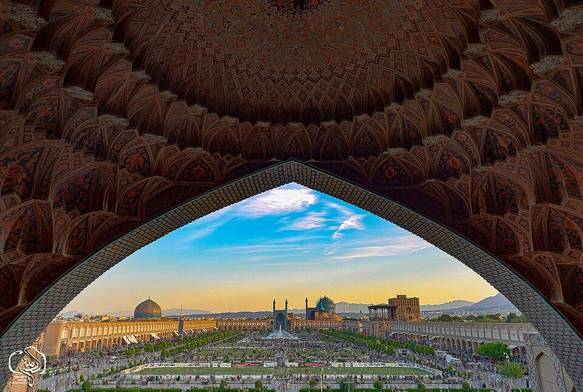
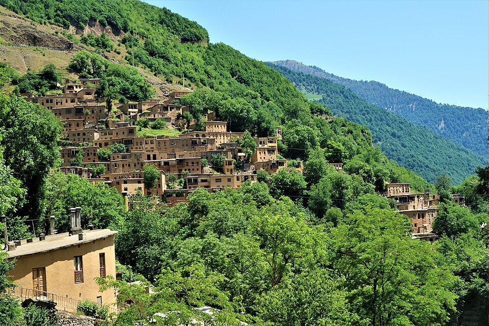
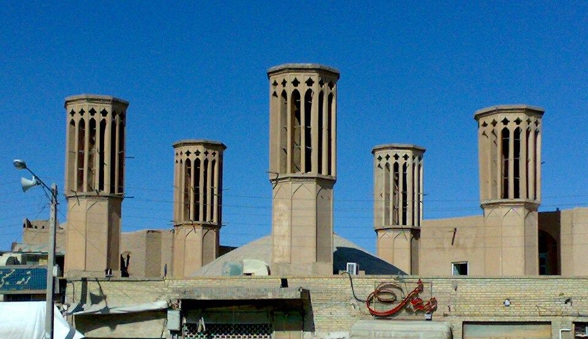
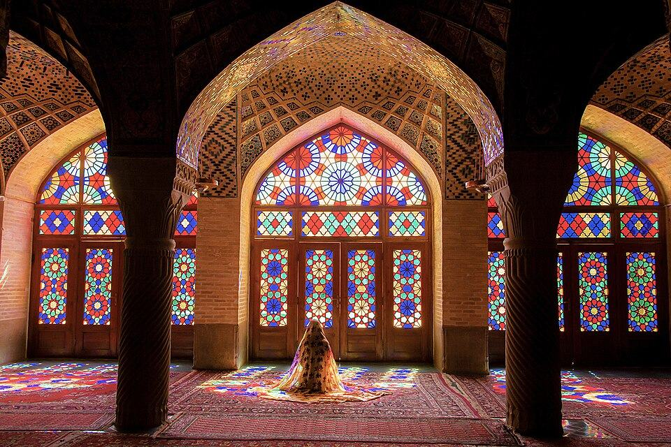
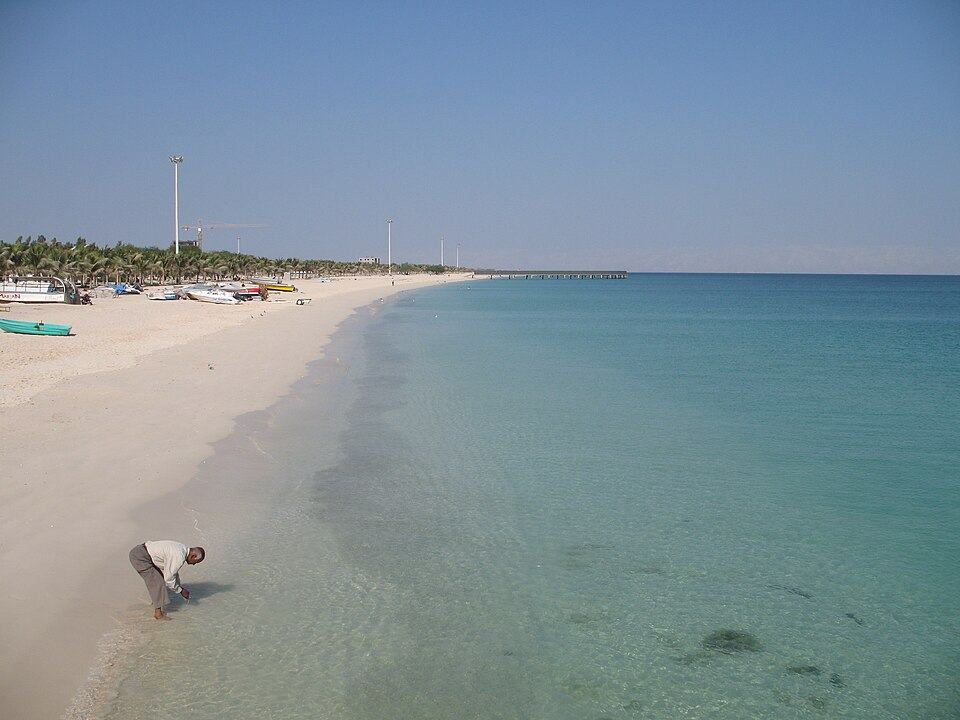
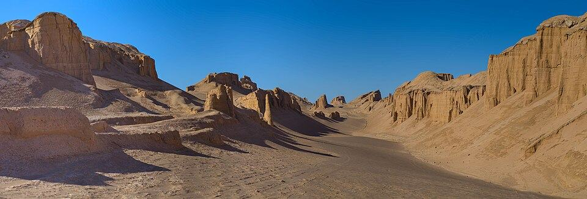
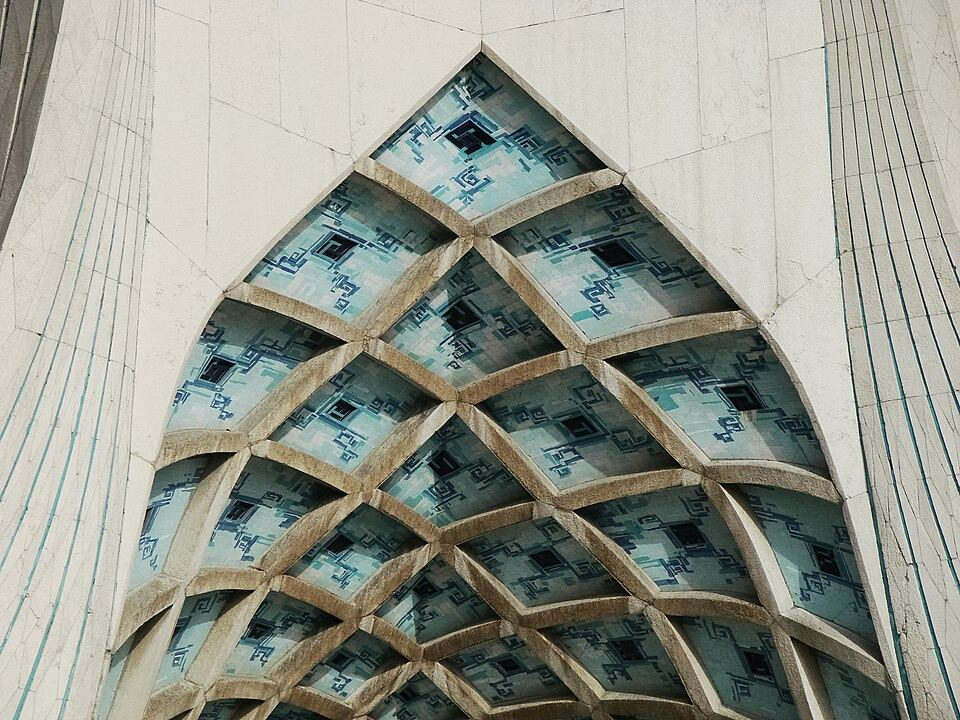
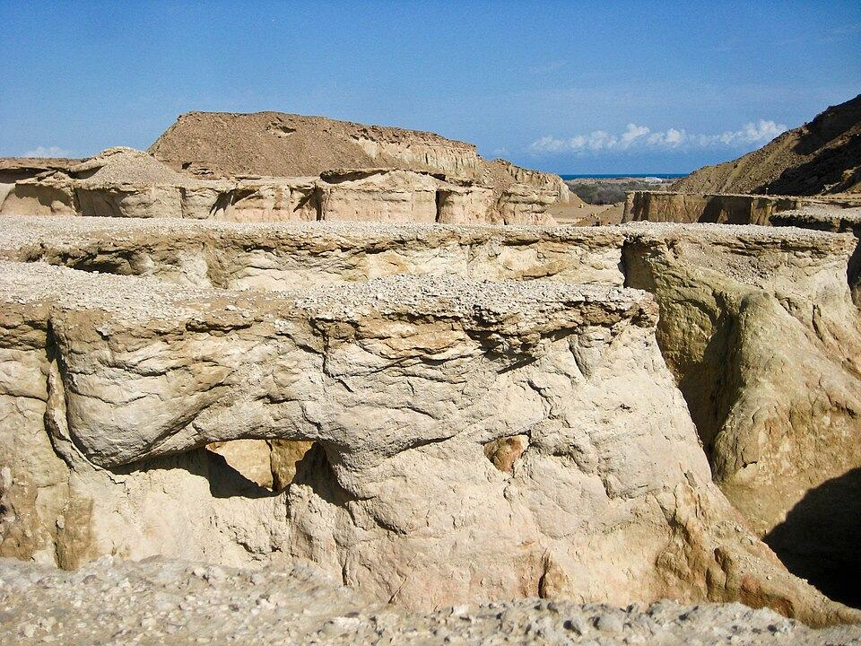
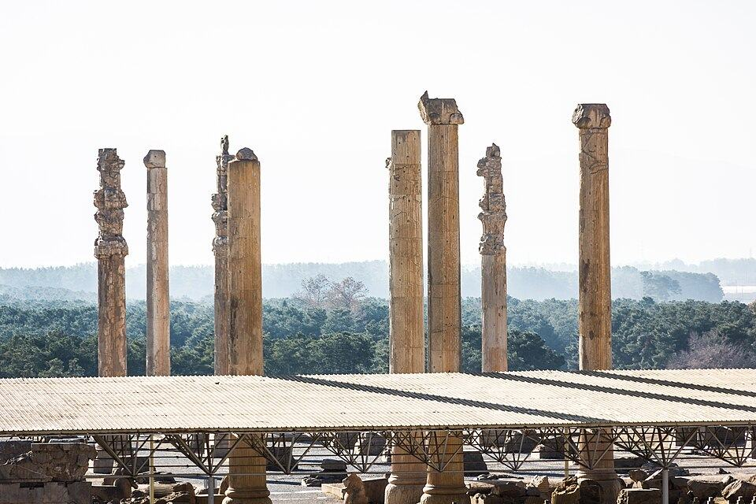

از جنگل شمال تا جزایر جنوب
مقصدهای ایران
برای هر مقصد صفحهٔ جداگانهای شامل ویژگیها، برنامهریزی و نکات مسئولانه سفر وجود دارد.

اصفهانمعماری، هنر و تاریخعکس: Armin Dadvand · CC BY-SA 4.0 ↗








عکسها از Wikimedia Commons دریافت و برای بارگذاری سریع کمحجم شدهاند؛ نام عکاس، مجوز و منبع کنار هر مقصد آمده است. جزئیات متغیر مانند ساعات بازدید، قیمت و وضعیت دسترسی را نزدیک سفر از مرجع رسمی بررسی کنید.